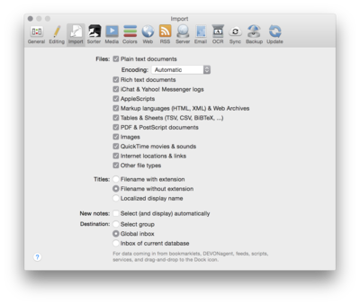

|

Here you decide which file types DEVONthink Pro Office imports and how those files will be named in the database.
Files
These options define whether DEVONthink Pro Office imports files of a given type when you import folders using
File > Import
or via drag-and-drop.
-
<type>: Select all the file types you want DEVONthink Pro Office to recognize when importing folders. DEVONthink Pro Office always imports every file you import manually.
-
Encoding: Choose the default encoding for plain text documents. Select Automatic to let DEVONthink Pro Office choose the best encoding.
-
Other file types: Check to import files of a type unknown to DEVONthink Pro Office. QuickLook and Spotlight are used to access and display the contents of the file.
Titles
Select how you want DEVONthink Pro Office to name imported documents: with file name extensions, without file name extensions, or by using localized display names (for example, on a German system the "Applications" folder would appear as "Programme").
New notes
Check Select (and display) automatically to automatically select and display the last note you have taken.
Destination
Choose the default destination where data is stored that's coming in from bookmarklets, DEVONagent Pro, news feeds, (external) scripts, or services.
-
Select group: A group selector is shown that lets you choose the destination. The group selector appears as a black panel floating on top of all other windows. It does not bring DEVONthink Pro Office to the front. Use it to select the group where you want to file the items and add tags.
-
Global inbox: The data is stored in the global inbox.
-
Inbox of current database: The data is stored in the inbox of the current active database.
|